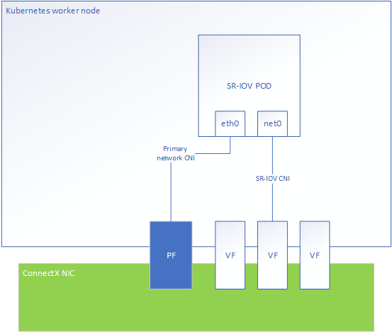

K8s on Bare Metal - Ethernet
On this page
This chapter describes Kubernetes solutions running on bare-metal hosts with NVIDIA’s Ethernet NIC family.
Operating System Requirements
NVIDIA drivers should be installed as part of the operating system.
Kubernetes Prerequisites
Install kubernetes Version 1.18, or newer. You may use the following references to Install Kubernetes with deployment tools:
It is recommended to use Kubernetes Version 1.18 with the following features enabled. This will ensure the best NUMA alignment between the NIC PCI and the CPU, and better utilize SR-IOV performance:
CPU Manager - With static CPU manager policy
Topology Manager - With single NUMA node policy
Examples of how to configure CPU and topology managers can be found in the Kubernetes Performance Tuning section.
Enabling SR-IOV Networking with Kubernetes
This chapter describes the setup and configuration procedures of legacy SR-IOV with SR-IOV Device Plugin and SR-IOV CNI.
Single Root IO Virtualization (SR-IOV) is a technology that allows a physical PCIe device to present itself multiple times through the PCIe bus. This technology enables multiple virtual instances of the device with separate resources. These virtual functions can then be provisioned separately. Each VF is an additional device connected to the Physical Function. It shares the same resources with the Physical Function, and its number of ports equals those of the Physical Function.
The following diagram represents the POD networking interfaces with Legacy SR-IOV as a secondary network.
Supported Network Interface Cards and Firmware
NVIDIA Networking supports the following Network Interface Cards and their corresponding firmware versions in Kubernetes:
Network Interface Card |
Firmware Version |
|---|---|
ConnectX®-6 Dx |
22.28.2006 |
ConnectX®-6 |
20.28.2006 |
ConnectX®-5 |
16.28.2006 |
Enabling SR-IOV Virtual Functions in Legacy Mode
SR-IOV Legacy mode supports standard network device and RDMA Over Converged Ethernet (RoCE)-enabled network device. To enable SR-IOV virtual functions in legacy mode, follow the instructions detailed in this link.
RoCE Namespace Aware
Prior to Kernel Version 5.3.0, all RDMA devices were visible in all network namespaces. Kernel Version 5.3.0 or NVIDIA OFED Version 4.7 introduce network namespace isolation of RDMA devices. When the RDMA system is set to exclusive, this feature ensures that the RDMA device is bound to a particular net namespace and visible only to it. To learn how to enable RoCE Namespace Aware by using RDMA CNI, see here.
Set the RDMA system to “exclusive”. This should be done on the host preparation stage:
rdma system set netns exclusive
Deploy the RDMA CNI:
kubectl apply -f https://raw.githubusercontent.com/Mellanox/rdma-cni/v1.0.0/deployment/rdma-cni-daemonset.yaml
Update the SR-IOV network CRD with RDMA CNI as a chained plugin:
apiVersion: "k8s.cni.cncf.io/v1"
kind: NetworkAttachmentDefinition
metadata:
name: sriov-net
annotations:
k8s.v1.cni.cncf.io/resourceName: nvidia.com/mlnx_sriov_netdevice
spec:
config: '{
"cniVersion": "0.3.1",
"name": "sriov-network",
"plugins": [
{
"type": "sriov",
"ipam": {
"type": "host-local",
"subnet": "10.56.217.0/24",
"routes": [
{
"dst": "0.0.0.0/0"
}
],
"gateway": "10.56.217.1"
}
},
{
"type": "rdma"
}
]
}
Example of RoCE-enabled pod with SR-IOV resource:
apiVersion: v1
kind: Pod
metadata:
name: testpod1
annotations:
k8s.v1.cni.cncf.io/networks: sriov-net
spec:
containers:
- name: appcntr1
image: <rdma image>
imagePullPolicy: IfNotPresent
securityContext:
capabilities:
add: ["IPC_LOCK"]
command: [ "/bin/bash", "-c", "--" ]
args: [ "while true; do sleep 300000; done;" ]
resources:
requests:
nvidia.com/mlnx_sriov_netdevice: '1'
limits:
nvidia.com/mlnx_sriov_netdevice: '1'
The <rdma image> should contain RDMA user space libraries - e.g rdma-core, which are compatible with the host kernel.
Deploy the SR-IOV RoCE POD:
kubectl create -f sriov-roce-pod.yaml
RoCE with Connection Manager (CM)
Some RDMA applications use RDMA CM to establish connections across the network. Due to kernel limitation, NVIDIA NICs require pre-allocate MACs for all VFs in the deployment, if an RDMA workload wishes to utilize RMDA CM to establish connection.
To do that, run:
ip link set <pf-netdev> vf <vf-index> mac <mac-address>
echo <vf-pci-address> > /sys/bus/pci/drivers/mlx5_core/unbind
echo <vf-pci-address> > /sys/bus/pci/drivers/mlx5_core/bind
This will populate the VF’s node and port GUID required for RDMA CM to establish connection.
RoCE with GPUDirect
GPUDirect allows network adapters and storage drives to directly read and write to/from GPU memory, thereby eliminating unnecessary memory copies, decreasing CPU overheads and reducing latency. These actions result in significant performance improvements.
GPUDirect requires the following:
MOFED 5.5-1.0.3.2 and above
nvidia-peermem kernel module loaded by GPU Operator v1.9.0
NVIDIA GPU and driver supporting GPUDirect e.g Quadro RTX 6000/8000 or Tesla T4/Tesla V100/Tesla A100
The RoCE POD should be deployed as described in Creating SR-IOV with RoCE POD.
DPDK
SR-IOV DPDK support is configured similarly to SR-IOV (legacy) configuration. This section describes the differences.
Create the sriov-dpdk-pod.yaml file:
apiVersion: v1
kind: Pod
metadata:
name: testpod1
annotations:
k8s.v1.cni.cncf.io/networks: sriov-net
spec:
containers:
- name: appcntr1
image: <dpdk image>
imagePullPolicy: IfNotPresent
securityContext:
capabilities:
add: ["IPC_LOCK"]
volumeMounts:
- mountPath: /dev/hugepages
name: hugepage
resources:
requests:
memory: 1Gi
hugepages-1Gi: 2Gi
command: [ "/bin/bash", "-c", "--" ]
args: [ "while true; do sleep 300000; done;" ]
resources:
requests:
mellanox.com/mlnx_sriov_netdevice: '1'
limits:
mellanox.com/mlnx_sriov_netdevice: '1'
volumes:
- name: hugepage
emptyDir:
medium: HugePages
The <dpdk image> should contain DPDK and RDMA user space libraries e.g - rdma-core, which are compatible with the host Kernel and with each other.
CRI-O Version 1.17 and above requires adding NET_RAW to the capabilities (for other runtimes, NET_RAW is the default).
For DPDK to work with PA addresses with Linux >= 4.0 requires adding SYS_ADMIN to the capabilities.
DPDK applications that configure the device, such as MTU, MAC and link state, require adding NET_ADMIN.
Deploy the SR-IOV DPDK POD:
kubectl create -f sriov-dpdk-pod.yaml
OVS Offload
The ASAP2 solution combines the performance and efficiency of server/storage networking hardware with the flexibility of virtual switching software. ASAP2 offers up to 10 times better performance than non offloaded OVS solutions, delivering software-defined networks with the highest total infrastructure efficiency, deployment flexibility and operational simplicity. Starting from NVIDIA® ConnectX®-5 NICs, NVIDIA supports accelerated virtual switching in server NIC hardware through the ASAP2 feature. While accelerating the data plane, ASAP2 keeps the SDN control plane intact, thus staying completely transparent to applications, maintaining flexibility and ease of deployments.
OVN Kubernetes CNI with ConnectX
To enable OVN Kubernetes CNI with ConnectX, see OVN Kubernetes CNI with OVS offload.
Antrea
For Antrea CNI configuration instructions, see Antrea CNI with OVS Offload.